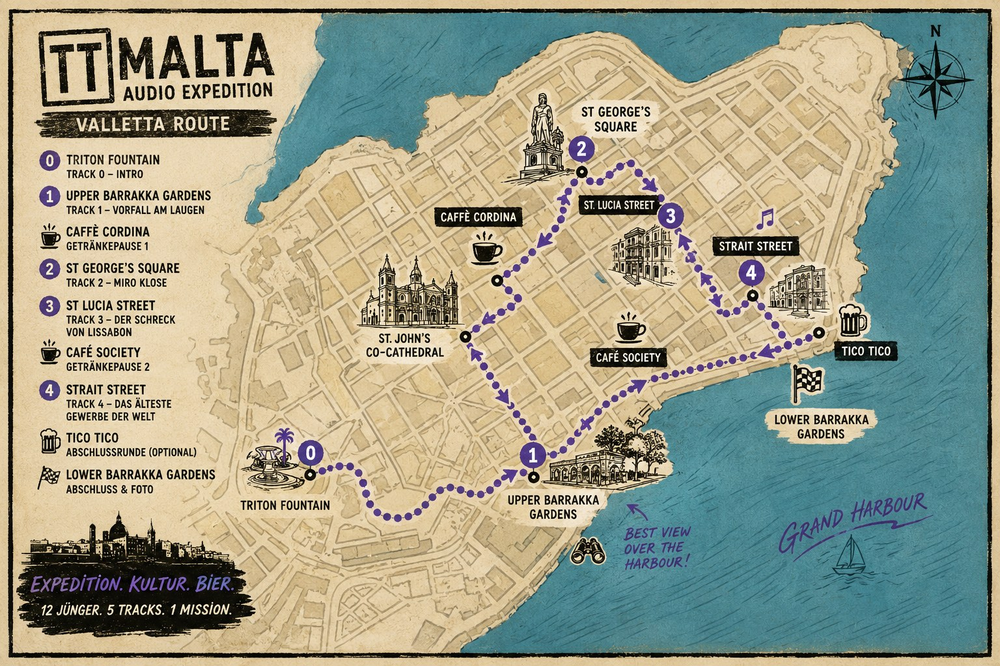

Kopfhörer anschließen, Hopfenkaltschale sichern und Tracks nur auf Anweisung der Reiseleitung öffnen.
ROUTENAKTE · VALLETTA
Expedition. Kultur. Bier.
Die geplante Route verbindet die Audio-Stationen mit Sehenswürdigkeiten, Versorgungsstopps und einem wissenschaftlich angemessenen Abschluss.

Archiv wird geladen...